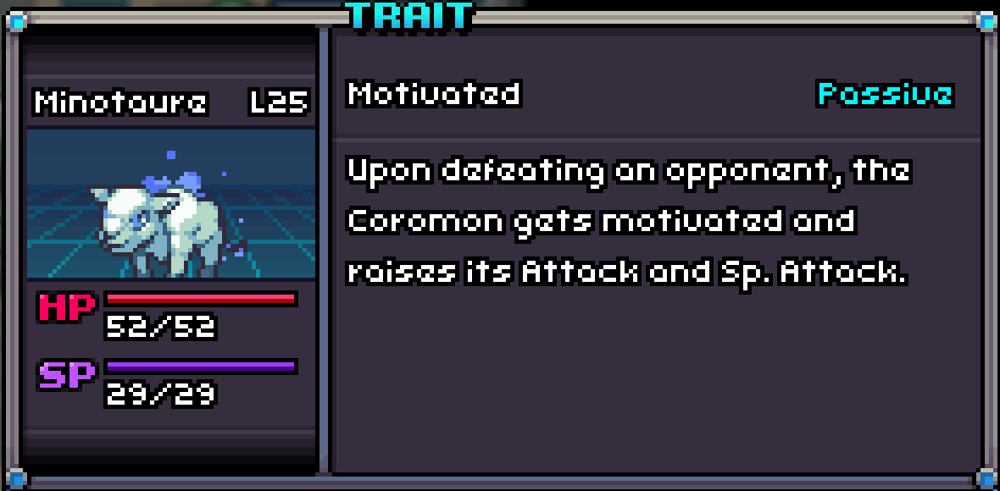
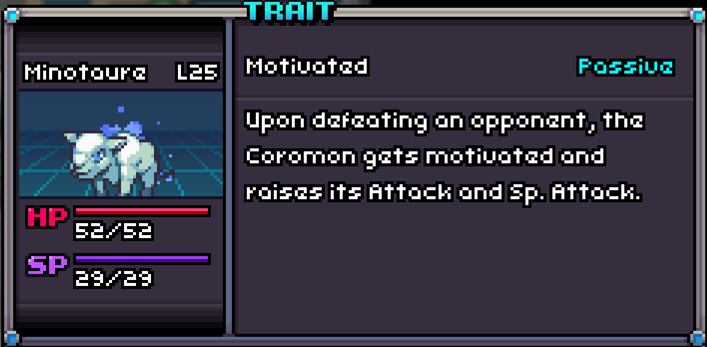

A perfect Mino with Motivated!
Motivated
Motivated is a passive trait that raises the Coromon's Attack and Special Attack by one stage each time it defeats an opponent.

A perfect Mino with Motivated!
Motivated is a passive trait that raises the Coromon's Attack and Special Attack by one stage each time it defeats an opponent.
| # in Corodex | Name | Type | Traits | HP | Speed | Attack | Defense | Sp. Att | Sp. Def |
|---|